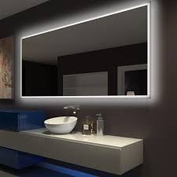
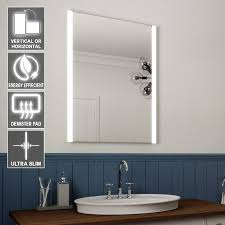

With Kandy'S mall, your mirror is the center of your space, and you’ll cherish it for years to come. Fully made-to-measure with a wide variety of LED layouts and LED colors available. Kandy'S mall will fit and upgrade any bathroom.
 | product name | stock availability | price of product | Sizes | Bathroom mirror | We stock 100 mirrors in different designers per week. | Our price start from R950 to R10 000, depending on which Bathroom mirror you are buying. | Grand Mirrors LUX is made to any size and adds an extra dimension to any bathroom, hotel, salon, and much more. With our CNC computerized mirror cutting machines, we cut the glass with extreme precision and create the mirror exactly in the size and shape you want. |
|---|